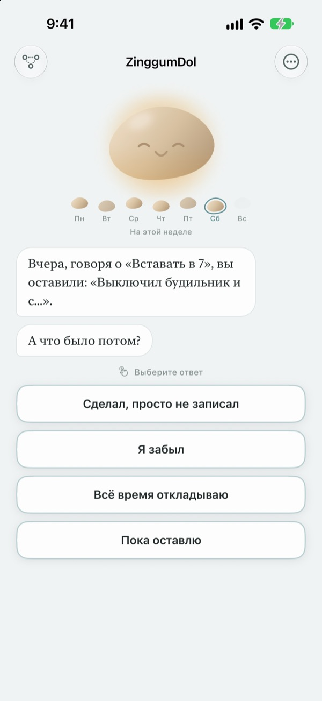
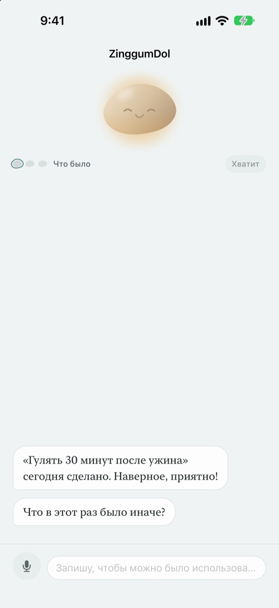
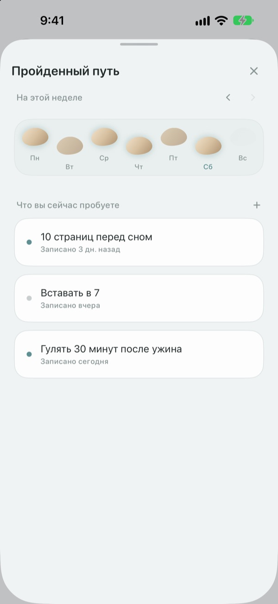
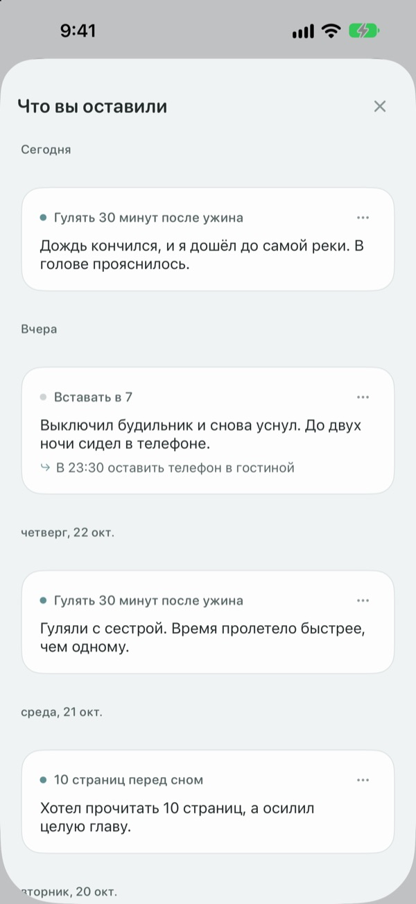

Оступиться ещё не значит
упасть в ручей
В день, когда цель сорвалась, камешек заговаривает первым. Он спрашивает, что случилось, а не что вы сделали не так, и возвращает вам события и чувства по отдельности.
Беседы, записи и пройденный путь бесплатны. Без регистрации и рекламы.

Поговорите с камешком
Сегодня вы собирались на вечернюю прогулку, но не вышло. Нажмите на ответ или напишите свой, и камешек ответит так же, как в приложении.
Когда день идёт не по плану, вы вините себя?
Вечером после пропущенной тренировки первая мысль обычно «что со мной не так?». А если присмотреться, была переработка, шёл дождь, сил не осталось. ZinggumDol спрашивает о том, что случилось, и о том, как вы себя чувствуете, в разные моменты и кладёт одно рядом с другим. Когда видно, что дело было в обстоятельствах, а не в силе воли, следующий маленький шаг найти легче.
Камешек заговаривает первым
Задайте цель, и камешек будет следить за днями, когда получилось, и днями, когда вы застряли. Когда день ускользает, он спрашивает «что случилось?», а не «почему нет?», и помнит, что вы рассказали в прошлый раз.
Если писать тяжело, просто скажите вслух. Речь распознаётся на устройстве, записи никогда не сохраняются.

Ваши дни как камни через ручей
Каждая неделя ложится рядом камней. Дни, на которые вы не ступили, тоже остаются; ничего не стирается.
Даже с пропуском-другим видно, что путь продолжается.

Перечитайте написанное
Что случилось, что вы чувствовали и что попробуете дальше, собирается по датам. Перечитайте день, когда застряли так же, и увидите, что помогло.
Виджет показывает слово камешка на экране «Домой», а напоминание в выбранное время зовёт оглянуться на день.

Начать можно за три шага
- 1
Запишите одну цель
Например, «Гулять 30 минут после ужина».
- 2
Откройте приложение вечером
Камешек спросит, как прошёл день. С напоминанием вы не забудете.
- 3
Нажмите или напишите ответ
Остановиться можно в любой момент кнопкой
Пока оставлю.
Как идёт беседа
- Что было
- Только факты: что помешало
- Чувства
- Как вы себя чувствуете сейчас, по шкале из пяти шагов
- Оглянуться назад
- Камешек возвращает события и чувства по отдельности
- Следующий шаг
- Вы сами выбираете что-то маленькое, пяти минут хватит
- Итог
- В совсем тяжёлый день он больше ни о чём не спрашивает и предлагает отдохнуть
Выйти можно в любой момент, а сказанное до этого сохранится.
Беседы и записи бесплатны. Pro, если хочется большего.
Бесплатно
- Все беседы с камешком
- До трёх целей
- Говорить вместо того, чтобы печатать
- Пройденный путь и всё написанное
- Виджет и ежедневное напоминание
- Блокировка код-паролем
ZinggumDol Pro
- Сколько угодно целей
- Шесть фактур камешка на выбор
- Экспорт записей в текстовый файл
Покупка один раз и навсегда. Не подписка.
Экран оплаты никогда не появляется посреди беседы. На новом устройстве или после переустановки нажмите «Восстановить покупки» в Настройках.
Частые вопросы
Нужно ли объяснять каждый пропущенный день?
Нет. Нажмите Пока оставлю в любой момент, и беседа сразу закончится. Сказанное сохранится, продолжить можно позже.
Я сделал, а приложение говорит, что нет.
Нажмите Сделано, просто не записано. Камешек примет поправку и вместо этого спросит, что помогло. То, что сработало, сохранится, и он напомнит об этом, когда вы снова застрянете.
Куда уходит то, что я говорю вслух?
Речь превращается в текст на устройстве, запись никогда не сохраняется. На поддерживаемых устройствах фразы ещё и приглаживаются, чтобы легче читались, тоже на устройстве.
Сколько целей можно завести?
Три бесплатно. Закончив с целью, нажмите Отпустить в разделе «Пройденный путь», чтобы освободить место. Для большего числа нужен ZinggumDol Pro.
ZinggumDol Pro — это подписка?
Нет. Вы платите один раз, и он ваш. На новом устройстве или после переустановки нажмите Восстановить покупки в Настройках.
Может ли кто-то прочитать мой дневник?
Учётной записи нет. Записи хранятся только на вашем устройстве и в вашем iCloud, а в Настройках можно заблокировать приложение код-паролем. Написанное никогда не отправляется разработчику. Анонимную статистику использования можно отключить в Настройках.
Как поменять время напоминания?
В разделе Ежедневное напоминание в Настройках его можно включить, выключить и выбрать время.
Камешек напоминает и об успехах?
Да. Он помнит, что вам помогало, и в трудный день напомнит о том, что недавно получилось.
Как удалить всё?
Нажмите Удалить все записи в Настройках. Цели и записи исчезнут навсегда, в том числе на других устройствах, связанных через iCloud. Настройки и покупки останутся. С Pro можно сначала сохранить копию через Экспорт записей.
Как с вами связаться?
Через «Отправить отзыв» в Настройках приложения или письмом на адрес ниже.
Вопросы или предложения? Пишите на leeo@kakao.com.